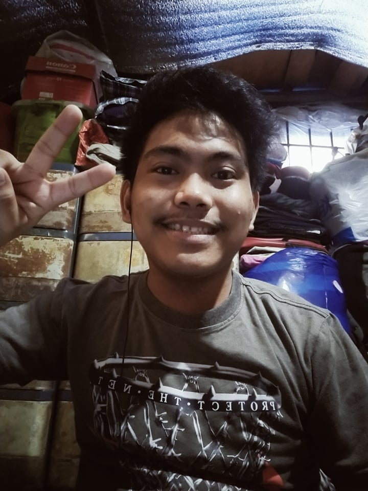
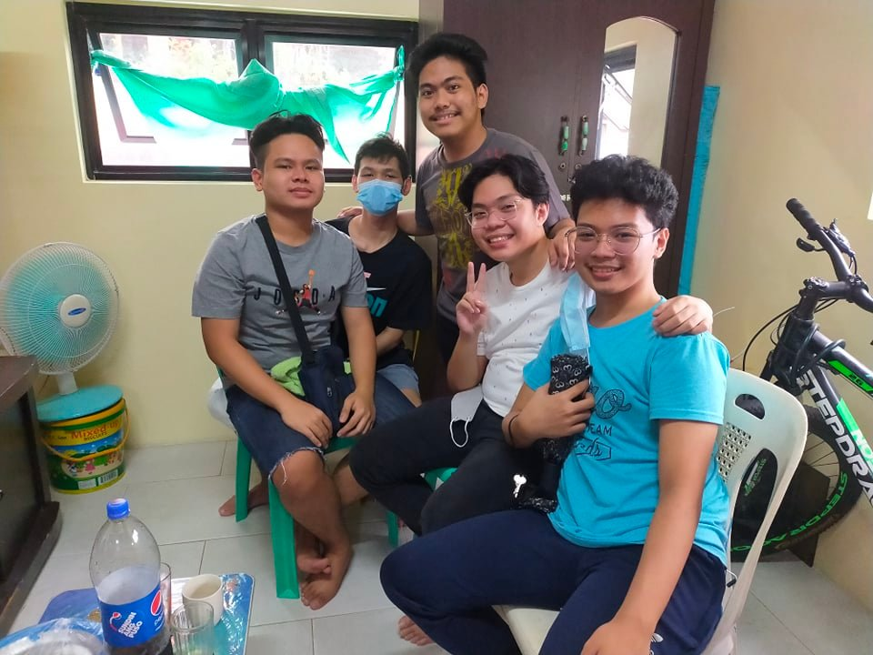
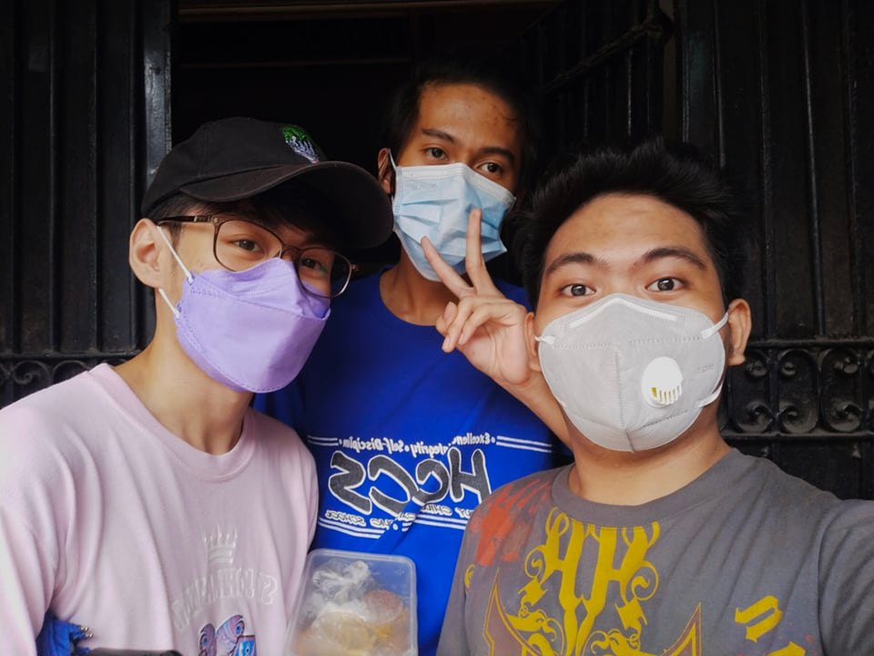
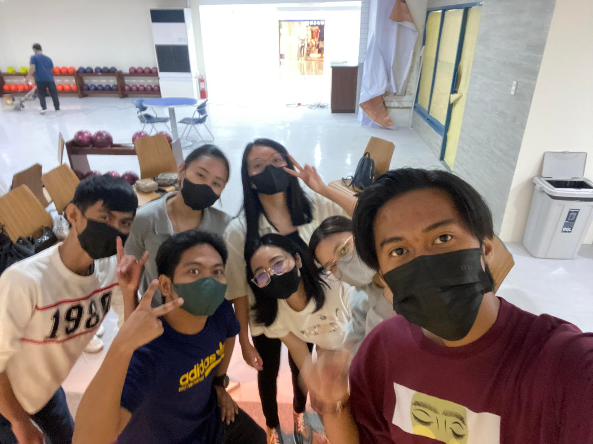

Even though I just came at these stage, I learned a lot of things that I must be more independent than
other people. I realize that people only rely on to theirselves, as well as when the time gets tougher
and harder. I learn how to cook, do laundry, wash the dishes and many more chores, that my father will
give me my own house where I can live by myself, to become more independent.
Back to the Main Page